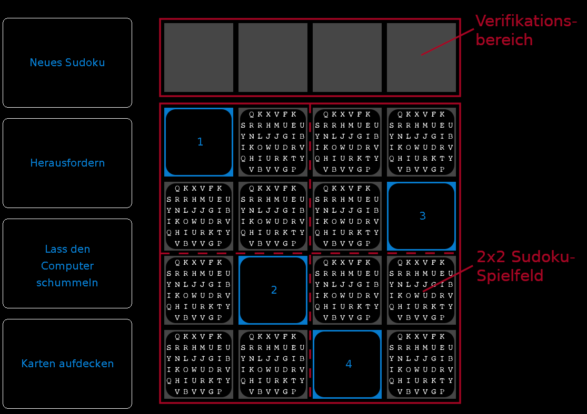

Zudo-Ku ist ein einfaches Spiel zur Veranschaulichung eines Zero-Knowledge-Protokolls. Der Rechner probiert, dir zu beweisen, dass er ein \(4 \times 4\) Sudoku-Rätsel gelöst hat, ohne dir die Zahlen in den einzelnen Kästchen (Zellen, Feldern) zu zeigen, die er ausgefüllt hat.

Startet man das Spiel neu, wird ein neues \(4 \times 4\)-Sudoku-Rätsel erstellt (bestehend aus vier Blöcken der Größe \(2 \times 2\), was zusammen 16 Kästchen ergibt). Vier Zahlen sind gegeben und werden auch gleich angezeigt – eine pro \(2 \times 2\)-Block. Der Computer löst das Sudoku dann verdeckt.
Wir denken uns, wir spielen das Sudoku mit Spielkarten statt wie üblich mit Stift und Papier.
1) Falls du neue Zahlen (also ein neues Sudoku-Rätsel) möchtest, klicke auf den linken Button Neues Sudoku.
2) Nach einem Klick auf den Button Herausfordern kannst du eine Reihe, Spalte oder einen Block auswählen, indem du auf die blauen Richtungspfeile im Spielfeld klickst.
Die ausgewählten Karten werden gemischt und dir oben im Verifikationsbereich gezeigt. Wenn der Computer wirklich eine korrekte Lösung hat, müssen in dieser Lösung die Zahlen 1 bis 4 jeweils genau einmal vorkommen.
Überprüfe, ob das so ist oder ob der Computer dich betrügen wollte!
Nach der Anzeige im Verifikationsbereich legt der Computer die Karten wieder verdeckt an seine ursprüngliche Position (selbstständig nach ca. 10 sec).
Die Animationen verraten keine Informationen zur Anordnung der Zahlen, sie dienen nur zur Visualisierung.
3) Jedes Mal, wenn du auf Lass den Computer schummeln klickst, wird er versuchen, eine Zahl falsch auszufüllen. Da die Karten verdeckt sind, weißt du nicht, wo sich der Fehler befindet.
Die meisten Zero-Knowledge-Protokolle basieren auf wiederholbaren Schritten. Jedes Mal, wenn du den Computer herausforderst, steigt die Wahrscheinlichkeit, dass die Wahrheit (richtig gelöst oder falsch gelöst) herauskommt.
Versuche doch mal, aus seinen Antworten die Lösung zusammenzusetzen. Weiter unten gibt es weitere Informationen zu den obigen Fragen.
4) Über Karten aufdecken wird die Lösung des Computers sichtbar gemacht. Benutze diese Funktion, falls du hinter die Kulissen blicken möchtest. Beachte, dass es in echten Zero-Knowledge-Protokollen nicht so einfach möglich ist, sich die echte Lösung anzuschauen.
Zero-Knowledge-Beweise und -Protokolle sind ein Teilbereich der Kryptografie. Bei der zugrundeliegenden Idee möchte eine Person (Beweiser) beweisen, dass sie im Besitz einer gewissen Information ist, ohne diese preisgeben zu müssen. Eine andere Person möchte sichergehen bzw. prüfen, dass der Beweiser wirklich im Besitz besagten Geheimnisses ist und nicht nur so tut (Verifizierer).
Stelle dir vor, du möchtest ein Auto kaufen. Die Verkäuferin verlangt von dir im vorhinein zu beweisen, dass du genug Geld auf dem Konto hast, um es zu bezahlen. Du möchtest aber nicht einfach jemandem Fremden deinen Kontostand zeigen. Hier kann ein Zero-Knowledge-Beweis helfen, um zu beweisen, dass du genug Geld hast, ohne die genaue Zahl preisgeben zu müssen.
Die meisten dieser Protokolle benötigen mehrere Runden, genauso wie dieses Zudo-Ku-Spiel. Mit jedem erfolgreich verifizierten Schritt steigt die Chance, dass der Beweiser wirklich im Besitz des Geheimnisses ist.
Zero-Knowledge-Protokolle haben drei wichtige Eigenschaften:
Die Idee hinter diesem Spiel kann im echten Leben noch besser demonstriert werden.
In der einfachen Variante: Nimm 81 Karten mit den Zahlen 1-9 und suche ein Sudoku-Rätsel aus. Die gegebenen (bekannten) Ziffern werden offen mit den Karten aufgelegt.
Eine Person spielt den Beweiser und löst das Sudoku mit verkehrt hingelegten Karten. (Natürlich kann diese Person auch versuchen zu betrügen und das Sudoku gar nicht wirklich richtig lösen.)
Unabhängig davon probiert nun der Beweiser, die andere Person von der Richtigkeit seiner Lösung zu überzeugen. Die Verifizierin wählt entweder eine Reihe, eine Spalte oder einen 3x3-Block aus. Wenn z. B. eine Reihe ausgewählt wurde, werden alle Karten reihenweise zu einem Pack zusammengenommen und gemischt. Die Verifizierin prüft nun, ob in dem Pack Karten die Ziffern 1-9 sind. Wenn nicht, wurde der Beweiser beim Schummeln erwischt.
Das Zurücklegen wie in der digitalen Variante ist dagegen nicht machbar. Deswegen können pro Spiel nur jeweils Reihen, Spalten oder Boxen geprüft werden und nicht alle drei. Das führt zu einer Zuverlässigkeit (Wahrscheinlichkeit, dass ein schummelnder Beweiser ertappt wird) von ≥ 1/3.
In der erweiterten Variante liegen auf einem Kästchen statt einer Karte drei Mal die gleiche. Auf diesem Weg kann die Verifiziererin Spalten, Reihen und Boxen gleichzeitig prüfen. Natürlich öffnet das auch eine neue Möglichkeit zu schummeln. Der Beweiser könnte anstatt den erwarteten {3,3,3} auf einer Zelle z. B. {3,3,4} legen. Man braucht hier mehr Karten, die Zuverlässigkeit steigt auf 8/9.
Für mehr Informationen sei hier noch einmal auf den wissenschaftlichen Artikel verwiesen, auf dem dieses Spiel basiert. [1]
Nach wie vielen Herausforderungen glaubst du dem Computer, dass er tatsächlich das Sudoku gelöst hat?Dieses Plug-in weicht vom Aussehen und der Benutzerführung von anderen JCrypTool-Plug-ins ab. Das liegt daran, dass es mit dem Java-AWT-Framework erstellt wurde. Bei Problemen, Bugs oder Verbesserungsvorschlägen steht das JCrypTool-Team gerne zur Verfügung.
Zudo-Ku ist eine für das Kryptologikum entworfene Implementierung der Ideen von Ronen Gradwohl, Moni Naor, Benny Pinkas und Guy Rothblum aus "Cryptographic and Physical Zero-Knowledge Proof Systems for Solutions of Sudoku Puzzles".